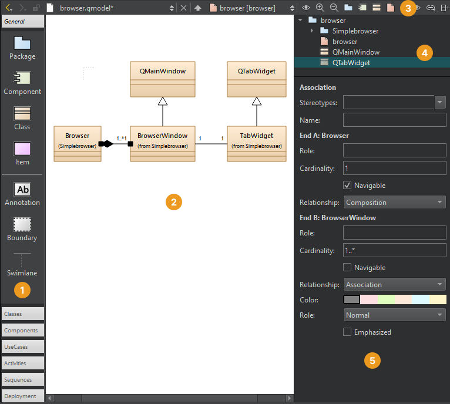
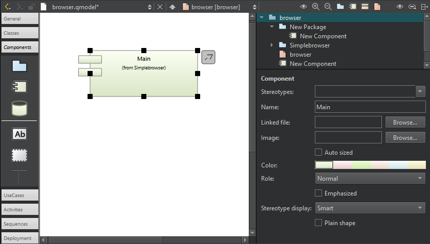

Model Editor
Use the model editor to create Universal Modeling Language (UML) style models with structured and behavioral diagrams that offer different views to your system. However, the editor uses a variant of UML and has only a subset of properties for specifying the appearance of model elements.
Structural diagrams represent the static aspect of the system and are therefore stable, whereas behavioral diagrams have both static and dynamic aspects.
You can create the following types of structural diagrams:
- Package diagrams, which consist of packages and their relationships and visualize how the system is packaged.
- Class diagrams, which consists of classes, dependencies, inheritance, associations, aggregation, and composition, and show a system in an object-oriented way.
- Component diagrams, which represent a set of components and their relationships and show the implementation of a system.
- Deployment diagrams, which represent a set of software and hardware components and their relationships and visualize the deployment of a system.
You can create the following types of behavioral diagrams:
- Use case diagrams, which consists of actors, use cases, and their relationships, and represent a particular functionality of a system.
- Activity diagrams, which visualize the flow from one activity to another.
- Sequence diagrams, which consist of instances and specify where the instances are activated and destroyed and where their lifeline ends.
Editing Models
You can create models that have several different structural or behavioral diagrams. Add elements to the diagrams and specify properties for them. Use standard model elements or add your own elements with custom icons.

A class diagram in the model editor.
Add elements to diagrams in the following ways:
- Drag elements from the element tool bar (1) to the editor (2).
- Select tool bar buttons (3) to add elements to the element tree (4).
- Drag elements from the element tree to the editor to add them and all their relations to the diagram.
- Drag source files from the sidebar views to the editor to add C++ classes or components to diagrams.
Grouping Elements
To group elements, surround them with a boundary. When you move the boundary, all elements within it move together.
Similarly, drag a swimlane to the diagram. When you move the swimlane, all elements right to the swimlane (for vertical swimlanes) or below it (for horizontal swimlanes) move together.
To create a vertical swimlane, drop the swimlane icon on the top border of the diagram. To create a horizontal swimlane, drop the icon near the left border.
Classes or other objects that you lay on packages move with the packages. To move individual elements and modify their properties (5), select them.
Use multiselection to group elements temporarily.
Aligning Elements
To align elements in the editor, select several elements and right-click to open a context menu. Select actions in Align Objects menu to align elements horizontally or vertically or to adjust their width and height.
Managing Elements
Drag the mouse over elements to select them and apply actions such as changing their stereotype or color. A stereotype is a classifier for elements, such as entity, control, interface, or boundary. An entity is usually a class that is used to store data. For some stereotypes, a custom icon is defined. You can assign several comma-separated stereotypes to one element.
To add related elements to a diagram, select an element in the editor, and then select Add Related Elements in the context menu.
By default, when you select an element in a diagram, it is highlighted also in Structure view. To change this behavior so that selecting an element in Structure makes it highlighted also in the diagram, select and then select Synchronize Diagram with Structure. To keep the selections in the diagram and Structure view synchronized, select Keep Synchronized.
Linking from Element Names to Files
To link to a file from the name of an element, select the file in Linked file.
Zooming into Diagrams
To zoom into diagrams:
- Select Zoom In toolbar button.
- Select Ctrl++.
- Select Ctrl and roll the mouse wheel up.
To zoom out of diagrams:
- Select Zoom Out.
- Select Ctrl+-.
- Select Ctrl and roll the mouse wheel down.
To reset the diagram size to 100%:
- Select Reset Zoom.
- Select Ctrl+0.
Printing Diagrams
To print diagrams, select Ctrl+C when no elements are selected in the editor to copy all elements to the clipboard by using 300 dpi. Then paste the diagram to an application that can print images.
If you copy a selection of elements in the editor, only those elements and their relations will be copied to the clipboard as an image.
Exporting Diagrams as Images
To save diagrams as images, go to File, and then select Export Diagram. To save only the selected parts of a diagram, select Export Selected Elements.
Adding Custom Elements
The model editor has the following built-in element types: package, component, class, and item.
To use custom icons for the built-in elements, select an image file in Image in element properties.

The Image field in Component properties.
Using Definition Files
For package, component, and class elements, you can use definition files to specify custom icons.
The color, size, and form of the icon are determined by a stereotype. If you attach the stereotype to an element, the element icon is replaced by the custom icon. For example, you can attach the entity and interface stereotypes to classes and the database stereotype to components.
The use case and activity diagrams are examples of using the built-in item element type to add custom elements. The item element has the form of a simple rectangle. The use case illustrates how to use a custom icon for an item. The attached stereotype is called usecase but it is hidden. Therefore, if you drag the use case to the diagram, it is shown as a use case but no stereotype appears to be defined and you can attach an additional stereotype to the use case.
Color and icons are attached to elements in use case and activity diagrams by using a simple definition file format. For example, the following code adds the UseCase custom element:
Icon {
id: UseCase
title: "Use-Case"
elements: item
stereotype: 'usecase'
display: icon
width: 40
height: 20
baseColor: #5fb4f0
Shape {
Ellipse { x: 20, y: 10, radiusX: 20, radiusY: 10 }
}
}
For more information about the available options, see standard.def in the share/qtcreator/modeleditor directory in the Qt Creator installation directory. It describes also how to define custom relation types and templates for existing types (such as a composition relation that can be drawn between classes).
Add your own definition file and save it with the file extension .def to add custom colors and icons for stereotypes, elements, or tool bars. Either store this file in the same directory as the standard.def file or select the root element of a model and apply your .def file to the property Config path.
See also How To: Create Models and Diagrams, Create files, and Sidebar Views.